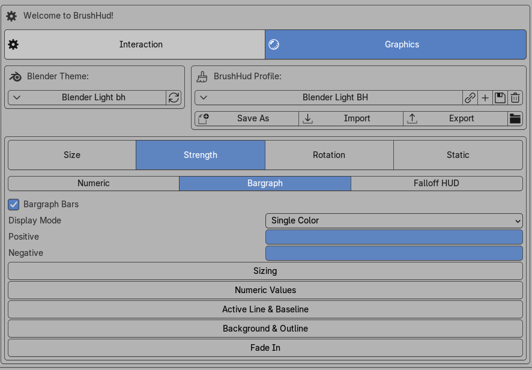

Strength HUDs

The Strength page is split into three displays: Numeric, Bargraph, and Falloff HUD. Each display can be tuned independently.
Numeric
The Numeric display is the simplest strength readout.
- Show Numeric Values: Displays the strength number.
- Font Size: Changes the size of the strength value text.
- Font File: Changes the typeface used by the strength number.
- Color Mode: Chooses whether the number uses one color or separate colors above and below zero.
- Color*: Sets the strength text color in single-color mode.
- Above Zero*: Sets the text color for positive-side values.
- Below Zero*: Sets the text color for negative-side values.
- Show Sign: Adds a visible plus or minus sign to the numeric strength display.
Capsule Display
- Background: Enables the numeric strength backdrop.
- Color Mode: Chooses whether the backdrop uses one color or separate colors above and below zero.
- Color*: Sets the backdrop color in single-color mode.
- Above Zero*: Sets the backdrop color for positive-side values.
- Below Zero*: Sets the backdrop color for negative-side values.
- Outline: Enables a border around the numeric strength capsule.
- Width: Sets the border thickness.
- Color*: Sets the capsule outline color.
Fade In
- Enable: Turns on fade-in behavior for the numeric strength display.
- Fade Time: Sets how long the numeric strength display takes to fully appear.
Bargraph
The Bargraph display adds a more structural visual display for strength changes.
Bargraph Bars
- Bargraph Bars: Enables the actual positive and negative strength bars.
- Display Mode: Chooses whether the bars use simple directional colors or a gradient-style overflow presentation.
- Positive*: Sets the positive bar color in single-color bar mode.
- Negative*: Sets the negative bar color in single-color bar mode.
- Positive (base)*: Sets the lower positive gradient color.
- Positive (top)*: Sets the upper positive gradient color.
- Negative (base)*: Sets the lower negative gradient color.
- Negative (top)*: Sets the upper negative gradient color.
Sizing
- Graph Height: Scales the vertical size of the bargraph.
- Graph Width: Scales the horizontal size of the bargraph.
Numeric Values
- Show Numeric Values: Keeps a numeric strength readout visible alongside the bargraph.
- Font Size: Changes the size of that numeric readout.
- Font File: Changes the typeface used by the bargraph number.
- Color Mode: Chooses whether the number uses one color or separate colors above and below zero.
- Color*: Sets the numeric text color in single-color mode.
- Above Zero*: Sets the numeric text color for positive-side values.
- Below Zero*: Sets the numeric text color for negative-side values.
- Bar Gap Fill: Adds visible fill in the gaps between bars.
- Gap Color Mode: Chooses whether those gaps use one color or dual positive and negative colors.
- Gap Color*: Sets the gap fill color in single-color mode.
- Above Zero*: Sets the positive gap color in dual mode.
- Below Zero*: Sets the negative gap color in dual mode.
Active Line and Baseline
- Active Line: Draws the current-value marker on the bargraph.
- Line Width: Sets the active line thickness.
- Color Mode: Chooses single-color or dual-color behavior for the active line.
- Color*: Sets the active line color in single-color mode.
- Above Zero*: Sets the active line color above zero.
- Below Zero*: Sets the active line color below zero.
- Baseline: Draws the starting-value marker.
- Baseline Style: Chooses the bargraph baseline appearance.
- Line Width: Sets the baseline thickness.
- Color*: Sets the baseline color.
- Zero Line: Draws the neutral center line.
- Line Width: Sets the zero line thickness.
- Color*: Sets the zero line color.
Background and Outline
- Background: Enables the bargraph backdrop.
- Color*: Sets the backdrop color.
- Fade to Top: Fades the backdrop vertically instead of keeping a uniform fill.
- Rounded Corners: Enables rounded edges on the backdrop.
- Corner Radius Scale: Controls how strongly the corners are rounded.
- Outline: Adds a border around the bargraph region.
- Width: Sets the border thickness.
- Color*: Sets the border color.
Fade In
- Enable: Turns on fade-in behavior for the bargraph display.
- Fade Time: Sets how long the bargraph display takes to fully appear.
Falloff HUD
The Falloff HUD subsection combines curve shape, backdrop styling, label behavior, and value positioning.
Header Controls
- Rounded Sqaure | Circle: Choose the shape of the Strength HUD, square or circle
- Clay Shape (Falloff): toggles the surface shape used to visualize the falloff curve form.
- Color*: Sets the clay shape fill color.
Sizing
- HUD Size: Changes the overall size of the falloff display.
- Global Scale: Multiplies the whole falloff HUD layout.
Numeric Values
- Font toggle: Enables the value readout inside the falloff HUD.
- Font Size: Changes the value text size.
- Font File: Changes the typeface used by the value text.
- Color Mode: Chooses whether the value uses one color or separate positive and negative colors.
- Color*: Sets the value color in single-color mode.
- Above Zero*: Sets the positive-side value color.
- Below Zero*: Sets the negative-side value color.
- Follow Active Line: Makes the value readout follow the active curve position instead of staying at a fixed offset.
- Transition Type: Controls how the value moves between positions.
- Font Offset: Controls how far the value sits away from its anchor point.
- Responsiveness: Controls how quickly the moving value catches up to its target.
- Tightness: Controls how loosely or tightly the follow behavior settles.
- Zero Offset: Defines the neutral offset behavior around the zero region.
- Slide Time: Sets the duration of the slide animation when a sliding transition mode is used.
- Color Flip: Decides when the dual-color state should swap around the neutral or snap region.
Active Line and Baseline
- Active Line: Enables the visible falloff curve line.
- Line Width: Sets the active falloff line thickness.
- Line Color*: Sets the active falloff line color.
- Baseline: Adds the reference line to the falloff HUD.
- Baseline Style: Chooses how the reference line is drawn.
- Line Width: Sets the baseline thickness.
- Color*: Sets the baseline color.
Background and Outline
- Background: Enables the falloff backdrop behind the curve.
- Color*: Sets the backdrop fill color.
- Outline: Enables the border around the falloff backdrop.
- Width: Sets the outline thickness.
- Color*: Sets the outline color.
-
Preset Label: displays the name of the current falloff preset.
-
Size:Size changes the preset label text size.
-
Y Offset: Y Offset moves the preset label vertically.
-
Display Time: Display Time determines how long the label stays visible.
-
Fade Out Time: Fade Out Time determines how long the label takes to disappear.
-
Color*: Color sets the preset label color.
-
Fade In
-
Enable: Enable turns on fade-in behavior for the falloff HUD.
-
Fade Time: Fade Time sets how long the falloff HUD takes to fully appear.
Footnotes
*Full version only